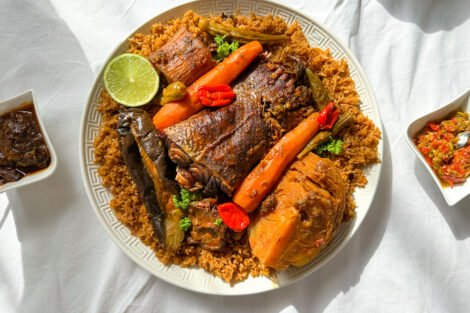

Plus proche des clients
L'expérience nous a apptris qu'il fallait améliorer la relation entre les clients et les personnel restaurant, pas que physiquement mais virtuellement aussi avec une prise en charge améliorée et structure selon les désirs du client

La cuisine sénégalaise est la meilleure!!!
Menu de délicieuses bouchée:
Apératifs:
- Salades Caprese:

Tomates fraîches, mozzarella et basilic arrosés de glaçage balsamique.
PRIX:5903CFA; 2500CFA - Fataya:

De délicieux chaussons croustillants farcis d'un mélange savoureux de viande hachée épicée, d'oignons et d'herbes aromatiques. Parfait pour grignoter et ouvrir l'appétit.
PRIX:500CFA; 200CFA - Accras de Niébé:

De savoureux beignets préparés à la base de haricots noirs (niébé). croustillants à l'extérieur et moelleux à l'intérieur,ils s'offrent une explosion de saveurs.
PRIX:400CFA; 150CFA
Plats Principaux:
- Saumon Grillé:

Filet de saumon assaisonné et grillé à la perfection, servi avec une sauce au beurre citronné.
PRIX:4000CFA; 3000CFA - Thiéboudieune (Poisson au Riz Rouge):

Le Plat National Sénégalais ! Du Riz Rouge savoureux mijoté dans une sauce tomate parfumée avec du poisson frais (souvent du tiof ou du capitaine) et un assortiments de légumes comme des carottes, des aubergines et du manioc. Un repas copieux et profondément satisfaisant transmis de génération en génération.
- Yassa au Poulet:

De tendres morceaux au poulet marinés toute une nuit dans u mélange vibrant de citon, d'oignons, de moutarde et d'épices, puis cuits lentement jusqu'à ce qu'ils soient incroyablement savoureux et succulents. Souvent servi avec du Riz blanc. Un plat familial parfumé et plein de saveurs.
PRIX:2500CFA; 1500CFA
Desserts:
- Fondue au chocolat:
- Thiakry (Dégué):

Un dessert rafraichissant et crémeux à base de couscousde mil fin, de yaourt sucré et de lait concentré sucré, parfumé à la vanille ou à la fleur d'oranger. Une douceur lactée trés appréciée.
PRIX:1000CFA; 8000CFA - Salade de Fruits Exotiques au Sirop de Bissap:

Un mélange coloré de fruits tropicaux frais (mangue, ananas, papaye) arrosé d'un sirop léger et parfumé au Bissap (jus d'Hibiscus). Un dessert léger, fruité et rafraichissant.
PRIX:3500CFA; 2500CFA

Assortiment de fruits et de guimauves servis avec une riche fondue au chocolat.
Défis à relever
Nous avons fait un constat général sur les restaurant en ligne: c'est la lenteur de la prise en charge, commande difficile par telephone, manque de visibilté en ligne, gestion de réservations compliquée etc. Cependan rassurez vous ABK CHICKEN est venu remédier à cela en vous apportant un concept différent avec des specialistes du réseau pour vos commandes en ligne soit plus pris au sérieux et une équipe de chefs cuisiniers pour se partager les taches pour les commandes physiques et celles en ligne mais aussi une autre équipe composer de "tiak-tiak" pour les livraisons.